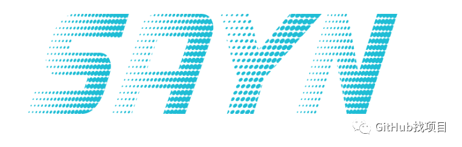

SAYN 是一个现代数据处理和建模框架，用于自动化任务的数据处理和建模框架。用户定义任务（包括 Python、自动 SQL 转换等）及其关系，SAYN 负责剩下的工作。它的设计宗旨是简单、灵活和集中，以便为数据工程工作流程带来显着的效率提升。是RPA在数据处理领域的一个好工具。
先看看什么是RPA！
机器人流程自动化（RPA，Robotic Process Automation）是一种基于人工智能和自动化技术的方法，通过模拟人类用户的操作，实现对各种应用软件和系统的自动化操作。RPA技术的核心优势在于它能够自动化执行具有高重复性、强规则性的任务，从而提高工作效率、降低企业成本、提高执行效率并打破信息孤岛。
RPA系统的优点包括：
1. 收益高：RPA能够模拟人类用户执行各种重复性、规律性的任务，从而提高业务流程的收益。
2. 成本低：RPA软件机器人不需要休息、不会犯错且无需工资，降低了企业在人力成本方面的投入。
3. 效率快：RPA可以快速构建数字化流程，短时间内提供显著的价值，降低总体风险。
4. 质量优：RPA能够准确、高效地处理繁琐的业务流程，保持灵活性。
5. 整合性：RPA可以跨部门串接各种业务流程，与多个系统架构相容。
6. 一致性：RPA遵循相同的流程，消除作业不一致性。
7. 准确性：只要逻辑设定正确，RPA就能确保获得正确的结果。
8. 机密性：RPA设计完善的安全防护，不存在人为泄密风险。
RPA的应用场景包括：
1. 数据采集：无论是网页、软件还是手机APP上的数据，RPA都可以进行批量采集。
2. 重复的手动工作：例如开具电子发票、填写表格等只需动手无需动脑的任务，RPA可以替代人工完成。
3. 跨平台协同：RPA可以实现网页与网页、网页与软件、软件与软件，甚至电脑与手机之间的协同操作。
总之，RPA技术为企业提供了一种高效、低成本的自动化解决方案，有助于提高工作效率、降低人力成本、增强数据整合能力和保障信息安全。
用例
SAYN 可用于数据工程和分析工作流程中的多种用途：
- 数据提取：通过定制的提取流程补充 Fivetran 或 Stitch 等工具。
- 数据建模：转换数据仓库中的原始数据（例如聚合活动或会话、计算营销活动投资回报率等）。
- 数据科学：集成和执行数据科学模型。
主要特征
SAYN具有以下主要特点：
- 基于 YAML 的 DAG（直接无环图）创建。这意味着所有分析师，包括不精通 Python 的分析师，都可以使用 SAYN 轻松地将任务添加到 ETL 流程。
- 自动 SQL 转换：编写 SELECT 语句。SAYN 将其转换为表/视图并为您管理一切。
- Jinja 参数：使用 Jinja 模板在开发和产品环境以及其他技巧之间轻松切换。
- Python 任务：使用 Python 脚本来补充您的提取和加载层并构建数据科学模型。
- 支持多个数据库。
- 还有更多…请参阅文档。
设计原则
SAYN 旨在通过其三个核心设计原则为数据工程师和分析师提供支持：
- 简单性：数据流程应该易于创建、扩展和维护。因此您的团队可以专注于数据转换而不是编写流程。SAYN 系统地编排您的所有任务，并提供许多自动化功能。
- 灵活性：数据的力量是无限的，您的工具也应该如此。SAYN 支持 SQL 和 Python，因此您的分析师可以为每个流程选择最佳的解决方案。
- 集中化：所有分析代码都应驻留在一个地方，使您的生活更轻松，并允许整个分析过程中的依赖关系。
快速开始
SAYN 支持 Python 3.7 至 3.10。
$ pip install sayn
$ sayn init test_sayn
$ cd test_sayn
$ sayn run
就是这个！您在示例项目上完成了第一次 SAYN 运行。
官网：https://173tech.github.io/sayn/
SAYN（Structured Analysis of Yield Networks）是一个现代数据处理和建模框架，主要用于自动化任务的数据处理和建模。
SAYN案例：
假设我们有一个在线教育平台，需要对用户的学习行为进行数据分析，以便于优化课程内容和推荐系统。我们可以使用SAYN框架来实现以下自动化任务：
1. 数据收集：首先，我们需要从平台的后端数据库中收集用户的行为数据，例如登录记录、观看视频时长、完成课程情况、用户评分等。
2. 数据预处理：使用SAYN对原始数据进行预处理，如数据清洗、缺失值填充、异常值处理等。这一步骤可以确保我们的分析结果不受无效数据的影响。
3. 特征工程：接下来，我们需要从预处理后的数据中提取有用的特征。在教育平台案例中，我们可以计算一些用户行为的统计指标，如平均观看时长、课程完成率等。此外，我们还可以通过文本分析方法提取课程和用户的特征，如课程主题、难度等级、用户年龄、兴趣等。
4. 模型构建：根据分析目标，选择合适的机器学习模型。在本例中，我们可以构建一个多选题推荐模型，用于预测用户对课程的兴趣。SAYN提供了多种模型，如线性回归、逻辑回归、支持向量机和神经网络等。我们可以根据实际情况选择最佳的模型。
5. 模型训练与评估：使用SAYN的自动化训练功能，对选定的模型进行训练。在训练过程中，SAYN会自动优化模型参数，以提高预测准确率。训练完成后，我们可以使用测试数据集对模型进行评估，确保模型的泛化能力。
6. 模型部署：将训练好的模型部署到生产环境中，实时为用户提供课程推荐。SAYN支持多种部署方式，如本地服务器、云服务和容器化等。
7. 持续优化：通过监控推荐系统的性能指标，如点击率、转化率等，持续优化模型。在需要时，可以对数据集进行更新，重新训练模型，以保持较高的预测准确率。
通过以上步骤，我们可以使用SAYN框架实现自动化任务，对在线教育平台的数据进行处理和分析，从而提高课程推荐系统的准确性并优化用户体验。这个案例展示了SAYN在自动化任务中的实际应用，强调了其简单、高效、灵活的特点。
这个框架的主要目标是简化数据处理和机器学习任务，使研究人员和工程师能够更快地开发、验证和部署智能系统。
SAYN 框架具有以下特点：
1. 高度可扩展：SAYN 可以处理各种规模的数据集，从小型数据集到大规模数据集，都能实现高效处理。
2. 易于使用：SAYN 提供了简洁的 API 和直观的语法，使得开发人员可以快速上手并进行数据处理和建模任务。
3. 集成多种算法：SAYN 支持多种机器学习算法，包括监督学习、无监督学习、半监督学习和强化学习等，满足不同场景的需求。
4. 自动调参：SAYN 框架内置了自动调参功能，可以帮助用户优化模型性能，提高准确率。
5. 跨平台：SAYN 支持多种操作系统，包括 Windows、Linux 和 MacOS 等，方便用户在不同环境下进行开发。
6. 社区活跃：SAYN 框架拥有一个活跃的社区，可以为用户提供丰富的资源、教程和支持。
在我国，SAYN 框架在许多领域都有广泛的应用，例如工业自动化、智能交通、医疗健康、金融服务等。通过使用 SAYN，企业和研究人员可以更快地开发出智能解决方案，提升生产效率，降低成本，为社会创造更多价值。
工作流程自动化在平时工作中确实具有广泛的应用场景，为各种行业和企业带来了显著的效率提升。以下是一些常见的工作流程自动化应用场景：
1. 行政办公：通过自动化工具，实现文件管理、日程安排、邮件处理等日常行政工作的自动化，提高工作效率。
2. 人力资源：工作流程自动化在招聘、员工培训、绩效评估等方面发挥作用，如智能筛选简历、自动化面试安排等。
3. 客户服务：利用自动化工具，实现客户咨询、投诉处理、售后支持等业务的自动化，提高客户满意度。
4. 销售和营销：通过自动化手段，进行数据挖掘、精准营销、线索跟进等，提升销售业绩。
5. 研发部门：借助自动化工具，实现代码审查、测试、部署等研发流程的自动化，提高软件质量。
6. 生产制造：自动化技术在生产线上有着广泛应用，如机器人焊接、装配、检测等，提高生产效率。
7. 财务会计：自动化工具可以帮助处理会计核算、发票管理、审计等财务工作，提高财务管理的准确性。
8. 供应链管理：自动化技术在物流、仓储、采购等环节发挥作用，实现供应链的高效运作。
在这些应用场景中，有许多优秀的工具和公司助力工作流程自动化的发展：
1. Workflow Max：Workflow Max 是一款专注于工作流程自动化的小型企业管理系统，涵盖项目管理、财务核算、客户管理等业务。
2. Automation Anywhere：Automation Anywhere 是一款智能自动化平台，提供机器人流程自动化（RPA）解决方案，广泛应用于各种行业。
3. UiPath：UiPath 是一款 RPA 平台，为企业提供自动化解决方案，涵盖业务流程、桌面应用、Web 应用等。
4. Blue Prism：Blue Prism 是一款 RPA 平台，支持企业级自动化流程，具有高度可扩展性和安全性。
这些工具和公司的工作流程自动化解决方案为企业带来了便捷、高效、智能的工作方式，助力企业不断发展壮大。